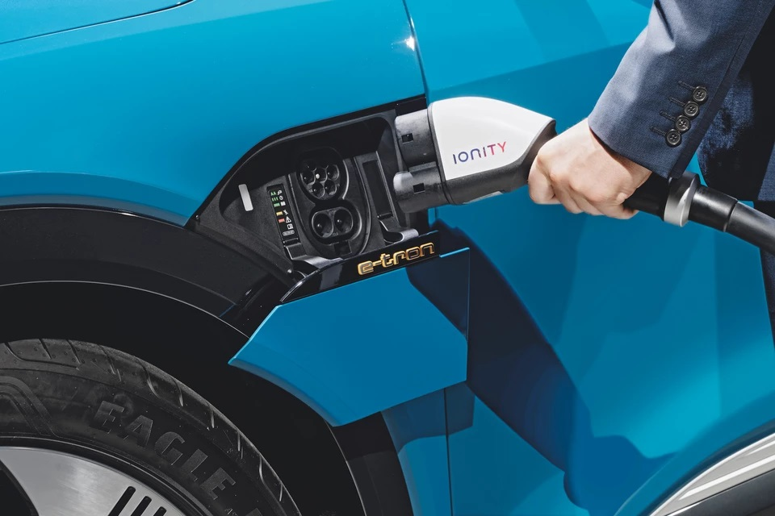
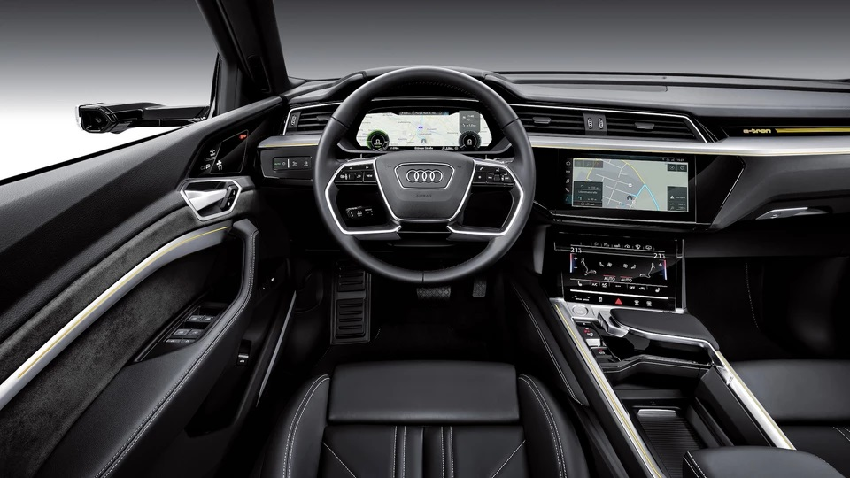
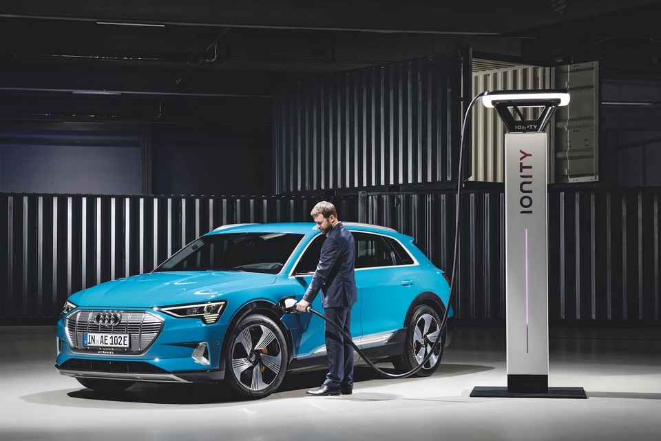
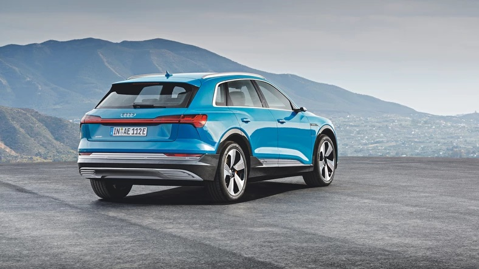

0
01.01.2020 | 06:45:37 | Dawid Karpczak
Audi pokazało swojego pierwszego elektrycznego SUV-a, który uzbrojony w silnik o mocy 480 KM i zasięg 400 km jeszcze w tym roku ma wyruszyć na wojnę z Teslą. A to dopiero początek serii nowych modeli na prąd przygotowywanych przez niemiecki koncern na najbliższą przyszłość.

Inaczej niż Mercedes, Audi pod względem stylistyki podąża tropem podobnym do Tesli: auto elektryczne nie powinno wyglądem bardzo odbiegać od spalinowego, żeby móc się sprzedawać na szeroką skalę i na całym świecie. Gdyby e-tron wchodził na rynek jako Q5 coupé z konwencjonalnym napędem, wyglądałby pewnie tak samo. Do stylistycznej nieporęczności nowego BMW iNexta mierzącemu 4,9 m Audi także daleko.Nowa linia, stworzona przez Marca Lichtego, szefa stylistów Audi, wygląda ciekawie, ma dokładnie tę dawkę awangardy, której w ostatnich latach brakowało wielu fanom Audi. E-tron jest poza tym bardzo funkcjonalny. Samochód o rozstawie osi 2,93 m ma zewnętrzne gabaryty Q5, ale wnętrze jest przestronne jak w Q7. W elektrycznym SUV-ie zmieści sie pięcioro podróżnych i 660 l bagażu – to bardzo dużo, zważywszy na to, że stylistom udało się zaprojektować zgrabne nadwozie w sportowym stylu.
Równie zdumiewające są techniczne warunki brzegowe. Ważne dla elektromobilności liczby wynoszą tu: 480, 400, 80 000 i oznaczają w kolejności: moc, zasięg oraz cenę (w euro). Witamy w lidze Tesli! Dla właściwości jezdnych wysoka moc w parze z 660 Nm momentu obrotowego, dostępnego od samego startu, oznacza przyspieszenia bliskie samochodom sportowym – w mniej niż 6 s do „setki”. Maksymalną prędkość ograniczono do 200 km/h.
Takie prędkości wolno jednak rozwijać sporadycznie, w przeciwnym wypadku zasięg ponad 400 km (zmierzony zgodnie z WLTP) nie będzie miał wiele wspólnego z rzeczywistością. Tak czy inaczej, 95-kilowatogodzinny akumulator e-trona da się w stacji szybkiego ładowania doładować w 80 proc. w mniej niż pół godziny. Kolumny High Power Charging Ionity powstają już w znacznej liczbie na zachodzie Europy i w Skandynawii.
Audi wkracza właśnie w erę pojazdów przyszłości. E-tron jako pierwszy seryjny samochód nie ma zewnętrznych lusterek, kamery przekazują obraz tego, co dzieje się z tyłu, na monitory w drzwiach. Swoją drogą Tesla też pilnie pracuje nad takim rozwiązaniem.
Debiut e-trona wyznacza początek elektrycznych nowości Audi. Już wiosną w przyszłym roku ma zostać zaprezentowane w Chinach studium małego crossovera eQ1, zaprojektowanego zgodnie z volkswagenowską koncepcją samochodów elektrycznych (MEB). Potem auto ma być produkowane na azjatyckie rynki właśnie w Państwie Środka.
Za to planowane również eQ2 będzie się poruszało już przetartym szlakiem. W tym wypadku harmonogram wprowadzenia na rynek jest szczególnie ważny. Niewielki sens miałoby zastąpienie aktualnego Q2 elektrycznym modelem. Dlatego oba auta, które mają się wyraźnie różnić wyglądem, będą oferowane równolegle – klienci wybiorą spośród dwóch koncepcji napędu. Przejście ze starego do nowego świata motoryzacji powinno się więc w Audi odbyć płynnie. Podczas gdy Q2 i planowane Q4, czyli wersja coupé aktualnego Q3, obsłużą rynek konwencjonalnych SUV-ów, eQ2 stanie do rywalizacji z Mercedesem EQA i następcą BMW i3. Ten plan nie jest jeszcze ostatecznie zaaprobowany, ale jeśli wszystko pójdzie dobrze, Audi zaoferuje do 2022 roku eQ2 w dwóch wariantach: jako SUV o klasycznych proporcjach i jako bardziej emocjonująca stylistycznie wersja coupé. To rozwiązanie zaczerpnięte ze świata konwencjonalnych SUV-ów – przykładem służyły Audi Q7 i Q8.
Audi długo przygotowywało się do tego momentu, ale gdy już on nastąpił, obudził nadzieję na szybki rozwój wydarzeń. E-tron ma połączyć cechy pojazdu dla mas – duży zasięg, przestronne wnętrze i akceptowalne ceny – z wysoką jakością i technicznym zaawansowaniem marki premium. Z takim podejściem do tematu elektromobilności kolejne mniejsze modele Audi, powstające na bazie architektury aut elektrycznych VW, mają szansę na powodzenie – oby nie tylko na azjatyckich rynkach.
Komentarze czytelników
Przemyślenia? Reakcje?Zapraszamy do przesyłania opini na naszego maila w zakładce kontakty.Zachęcam do dyskusji w komentarzach poniżej, jednocześnie prosząc o zachowanie etykiety oraz kultury wypowiedzi.

Użytkownik 1 | 31.12.2019 | 22:01:11
Audii to przeżytek!